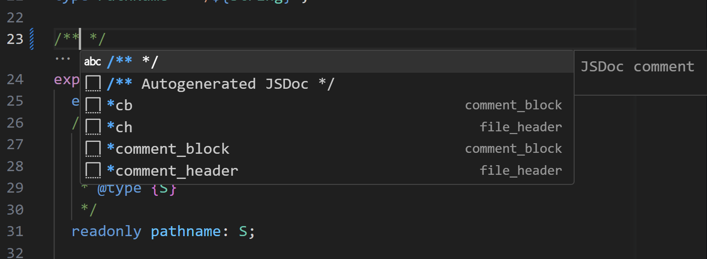

목차
설치 및 개발
설치방법
프로그램 설치
Node.js설치: 버전 v16.14.2 (권장)npm설치: 버전 v8.5.0 (Node.js v16.14.2 설치 시 기본으로 설치됨)Git설치IDE설치: Visual Studio Code 설치 (권장. 필요 시 Webstorm 등 설치)VSCdoe extensions설치: ESLint, Stylelint, JSDoc Generator 필수 설치. Git Extension Pack, Markdown 등 필요 시 설치
소스 코드 다운로드 및 패키지 설치
git clone [-b 브랜치] [원격저장소 url]실행: 소스 코드 다운로드cd <rootDir>실행: 프로젝트 root 경로로 이동npm install실행: 패키지 다운로드
$ git clone https://github.com/emaginews/react-seed-project
$ cd react-seed-project
$ npm install
개발 활용
- 설치 완료 후
./git폴더 삭제 및 새 프로젝트 repository 연동 ./package.json파일의 name, version 속성을 개발 프로젝트에 맞게 변경..env.*,./config/config.ts파일을 통해 프로젝트에 필요한 환경변수 설정. api 정보, 앱스킴 등- 필요시
./vscode/comments-frame.code-snippets자동주석 설정 파일의 작성자명 변경(기본 작성자명: linker). 코드조각 추가 설정 가능(또는 VSCode Extensions 활용). - 필요시
README.md파일 프로젝트에 맞게 수정. - 필요시
LICENSE파일 추가. 3rd-party 라이브러리에 대한
LICENSE 파일은 빌드시./build/static/js폴더에 자동으로 생성됨. - SCSS, styled component 중 원하는 방식으로 UI 디자인 스타일링. Less, Emotion 등 다른 스타일 도구 활용시 관련 패키지 설치 및 환경구성 추가 필요.
- Git commit, push 등의 기능 동작 중 성능 저하 발생시 다음 방법으로 Git Hook 설정 비활성.
./.husky/pre-commit파일의npx lint-staged코드를 주석 처리하거나,./package.json파일의 lint-staged 속성 삭제.
소스 코드
디렉토리 구조
디렉토리 구조는 개략적으로 다음과 같음
@linker/react-seed-project
├─ .husky
├─ .storybook
├─ .vscode
├─ config
├─ docs
├─ public
├─ scripts
├─ src
│ ├─ __tests__
│ ├─ __stories__
│ ├─ components
│ │ ├─ component1.tsx
│ │ ├─ component1.module.scss
│ │ ├─ component1.test.tsx
│ │ ├─ component1.stories.tsx
│ │ └─ ...
│ ├─ ...
│ ├─ App.scss
│ ├─ App.tsx
│ ├─ index.scss
│ ├─ index.tsx
│ └─ ...
├─ .env
├─ .env.dev
├─ .env.local
├─ .env.stg
├─ .eslintrc.js
├─ .gitignore
├─ .prettierignore
├─ .prettierrc
├─ .stylelintignore
├─ .stylelintrc.js
├─ jsdoc.config.js
├─ package-lock.json
├─ package.json
├─ README.md
├─ tsconfig.json
└─ ...
주요 디렉토리 및 파일
.husky디렉토리: Git 훅 설정 파일(default: commit 전에 staged 파일에 대해 정적분석 실행). 필요시 Git 훅 추가 구성(예: push 전 단위 테스트, E2E 테스트 실행 등)..vscode디렉토리: VS Code 설정 파일. 에디터, 주석(JSDoc) 및 코드조각(snippet) 자동완성 등의 설정 포함.storybook디렉토리: Storybook UI 디자인 시스템 개발 도구 설정 파일.config디렉토리: 빌드 및 개발 환경 설정 관련 스크립트.scripts디렉토리: CLI 실행 관련 스크립트.docs디렉토리: 문서 관련 폴더.public디렉토리: static 자원(HTML, assets 파일 등, 메인 HTML 파일 포함).src디렉토리: 소스 코드(메인 스크립트 파일 포함)..env.*파일: 환경변수 설정 파일. local(로컬환경), dev(개발환경), stg(검증환경), prd(운영환경) 구분tsconfig.json파일: typescript 프로젝트 빌드 설정 파일.jsdoc.config.js파일: JSDoc 문서화 도구 설정 파일..prettierrc파일: prettier 코드 포맷터 설정 파일..eslintrc.js파일: ESLint 린터 설정 파일..stylelintrc.js파일: Stylelint 린터 설정 파일.package.json파일: node_modules 패키지 정보.package-lock.json파일: node_modules 패키지 의존성 트리 정보.src/**/*.(spec|test).tsx또는src/**/__tests__: 단위 테스트 코드.src/**/*.stories.tsx또는src/**/__stories__: UI 디자인 시스템 코드.
주요 실행(Script) CLI
실행 및 빌드
npm run start[:env]: 로컬 환경에서 실행(프록시 서버 구성). env 플래그 기본값:localnpm run build[:env]: 번들링 결과물을<rootDir>/build경로에 추출. env 플래그 기본값:prd.- 타겟소스:
<rootDir>/src - 서비스 되는 최종 소스로 필요시 Jenkins, Amazon S3, NGINX, Github CI/CD 등을 활용하여 배포 pipeline 구축.
- 타겟소스:
env플래그: 실행 명령어 뒤에 환경변수 옵션 설정. 생략시 기본값 적용local: .env.local 환경변수 설정 파일로 실행.dev: .env.dev 환경변수 설정 파일로 실행.stg: .env.stg 환경변수 설정 파일로 실행.prd: .env 환경변수 설정 파일로 실행.
ex1) npm run start
ex2) npm run start:prd
ex3) npm run build
ex4) npm run build:local
...
테스트
-
코딩 규칙
- 타겟소스:
<rootDir>/ npm run lint: 코딩 컨벤션(ESLint 스타일 가이드), 코드 포맷터(Prettier)에 의해 정적 분석 실행. 대상: 스크립트(EcmaScript) 문법npm run lint:style: 코딩 컨벤션(Styleint 스타일 가이드)에 의해 정적 분석 실행. 대상: 스타일시트 문법npm run lint:fix: 정적 분석 오류 코드 자동 수정(단, 자동 수정 불가 코드는 직접 수정 요함).- [참조]: 코딩 컨벤션 상세 문서
- 타겟소스:
-
단위 테스트
- 타겟소스:
src/**/*.(spec|test).tsx또는src/**/__tests__ npm run test: 단위 테스트 실행npm run test:watch: 코드 변경 사항을 추적하여 단위 테스트 실행npm run test:report: 단위 테스트 report 문서를<rootDir>/coverage경로에 추출.- [참조]: 코드 테스트 상세 문서
- 타겟소스:
UI 디자인(Storybook)
- 타겟소스:
src/**/*.stories.tsx또는src/**/__stories__ npm run storybook: 컴포넌트, 화면 등 UI 디자인 렌더링 테스트를 위한 웹 브라우저 실행.npm run storybook:export: UI 화면 디자인 결과물을<rootDir>/storybook-static경로에 추출.- [참조]: storybook 상세 문서
문서화
- 타겟소스:
<rootDir>/src npm run docs: JSDoc(javaDoc 기반) 스타일 주석을 기반으로 소스크드 관련 산출 문서를<rootDir>/docs-build경로에 추출.- [참조]: 문서 산출 상세 문서
배포
npm run deploy(진행중): 웹소스 배포 pipeline 연동.- 타겟소스:
<rootDir>/build
- 타겟소스:
npm run deploy:storybook(진행중): UI 디자인 시스템 및 관련 문서 배포.- 타겟 소스:
<rootDir>/storybook-static. - Slack 연동 등을 통한 공유 방법 검토중.
- 타겟 소스:
npm run deploy:docs: 소스코드 산출 문서 배포.- 타겟소스:
<rootDir>/docs-build. - 해당 명령어 실행 전 내부적으로 npm run docs(문서 빌드) 스크립트가 먼저 실행됨.
- [참조]: 배포 상세 문서
- 타겟소스:
CI/CD 구성
- 진행중
기타
개발환경 이미지 공유
docker 컨테이너배포 검토중(groom 활용, 스크립트 구성 등)yarn berryzero-install 검토중
환경변수 설정
작업중
코드조각(snippets)
주석 자동 완성 기능
스크립트 파일에서 /** 타이핑 후 보이는 선택창에서 주석 템플릿 목록 선택. 다음 이미지 참조

- JSDoc 주석: 주석 템플릿 목록에서
/** Autogenerated JSDoc */목록 선택. 함수, 클래스 등 선언문 바로 윗줄에서 /** 타이핑. 함수, 클래스, 변수, 타입선언 코드 등에 사용 권장. 문서화 기능과 연동되는 기반 주석으로 활용됨. JSDoc Generator(VSCode extension) 설치 시 사용 가능. - 파일 주석: 주석 템플릿 목록에서
comment_headerorch목록 선택. 파일 최상단에 작성 권장. - 일반 주석: 주석 템플릿 목록에서
comment_blockorcb목록 선택. 변경이력, 특이사항 등 작성.
설정 파일
<rootDir>/.vscode/comments-frame.code-snippets파일: 일반 주석, 파일 주석 snippets 관련 설정 파일.{ "file_header": { "prefix": [ "*ch", "*comment_header", "comment-header" ], "body": [ "*", " * @author 작성자", " * @since $CURRENT_YEAR.$CURRENT_MONTH.$CURRENT_DATE $CURRENT_HOUR:$CURRENT_MINUTE:$CURRENT_SECOND", " * @version 0.1.0", ... ], }, ... }
LICENSE
References
빌드 도구
Webpack(번들러)
Babel(트랜스파일러)
주요 라이브러리
Node.js
타입스크립트
React
Sass(CSS 전처리기)
Storybook(UI 디자인시스템 관리도구)
- https://storybook.js.org/
- https://storybook.js.org/tutorials/intro-to-storybook/react/ko/get-started/
기타
- https://lodash.com/ (자바스크립트 utils 모음 관련)
- https://github.com/toddbluhm/env-cmd (환경변수 설정 관련)
- https://typicode.github.io/husky/guide.html (Git Hook 관련)
테스트 도구
정적 분석(Prettier, ESLint, Stylelint, Airbnb 권장 규칙 등)
- https://prettier.io/
- https://eslint.org/
- https://github.com/airbnb/javascript/tree/master/packages/eslint-config-airbnb/rules
- https://eslint.org/docs/latest/rules
- https://github.com/typescript-eslint/typescript-eslint/tree/main/packages/eslint-plugin/docs/rules
- https://github.com/jsx-eslint/eslint-plugin-react/tree/master/docs/rules
- https://legacy.reactjs.org/docs/hooks-rules.html
- https://github.com/jsx-eslint/eslint-plugin-jsx-a11y/tree/main/docs/rules
- https://github.com/import-js/eslint-plugin-import/tree/v2.28.0/docs/rules
- https://github.com/wix-incubator/eslint-plugin-lodash/tree/master/docs/rules
- https://stylelint.io/user-guide/rules/
동적 분석
문서화 도구
- https://jsdoc.app/
- https://github.com/SoftwareBrothers/better-docs
- https://github.com/clenemt/docdash
- https://www.npmjs.com/package/clean-jsdoc-theme
VSCode Extensions
- https://marketplace.visualstudio.com/items?itemName=dbaeumer.vscode-eslint
- https://marketplace.visualstudio.com/items?itemName=stylelint.vscode-stylelint
- https://marketplace.visualstudio.com/items?itemName=sugatoray.vscode-git-extension-pack
- https://marketplace.visualstudio.com/items?itemName=NicholasHsiang.vscode-javascript-comment
- https://marketplace.visualstudio.com/items?itemName=crystal-spider.jsdoc-generator